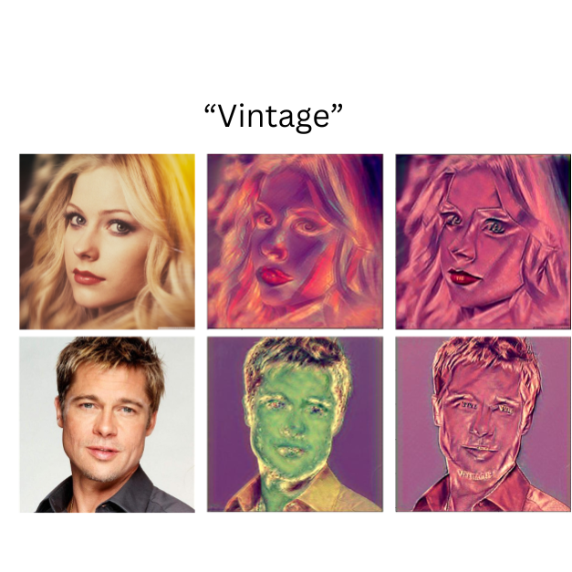

|
Silky Singh I am a Master's in CS student at Stanford. Previously, I worked at MDSR Lab, Adobe as a Research Associate. During the ~2 years, I explored generative models (diffusion models), image editing, self-supervised learning, image and video segmentation, and style transfer developing a broad interest in Computer Vision and Machine Learning.
Even before that, I graduated from IIT Delhi with a Bachelor's degree in Mathematics
and Computing. My thesis project on "Deep Neural Network approximation for image denoising" was advised by
Prof. Sivananthan Sampath. During my undergrad,
I spent wonderful time at
Adobe Research working with Dr. Kuldeep Kulkarni
on context-aware object insertion in images, and at
Max Planck Institute working on
program synthesis with Prof. Eva Darulova.
CV / Google Scholar / Github / LinkedIn / Misc |
Publications(* equal contribution) |
|
LEAST: "Local" text-conditioned image style transfer
Silky Singh, Surgan Jandial, Simra Shahid, Abhinav Java CVPR workshop on AI for Content Creation (AI4CC), 2024 arXiv / code An optimization-based end-to-end framework for localized style transfer. |
|

|
LOCATE: Self-supervised Object Discovery via Flow-guided Graph-cut and Bootstrapped Self-training
Silky Singh, Shripad Deshmukh, Mausoom Sarkar, Balaji Krishnamurthy British Machine Vision Conference (BMVC), 2023 project page / paper / arXiv / code / poster Self-supervised framework for object segmentation in both videos and images. |
|
FODVid: Flow-guided Object Discovery in Videos
Silky Singh, Shripad Deshmukh, Mausoom Sarkar, Rishabh Jain, Mayur Hemani, Balaji Krishnamurthy CVPR workshop on Learning with Limited Labelled Data for Image and Video Understanding (L3D-IVU), 2023 arXiv / paper / poster Video Object Segmentation (VOS) by leveraging flow-guided graph cut and temporal consistency in videos. |
Preprints(* equal contribution) |
|  |
StylRel: Leveraging style-based relations for text-conditioned style transfer
Surgan Jandial*, Silky Singh*, Simra Shahid*, Abhinav Java, Shripad Deshmukh preprint |
US Patents(* equal contribution) |
|
|
|
|
|
|
|
Academic Service |
|
Last Updated: Oct 2024 |